文档说明：
- OS 版本：Red Hat Enterprise Linux 8.2 (Ootpa)
- Podman 版本：podman-1.9.3-2.module+el8.2.1+6867+366c07d6.x86_64
- loganalyzer 版本：loganalyzer-4.1.11.tar.gz
- 该示例中使用 yum 安装的软件包若未指定特定版本均为系统自带软件包。
架构示例：
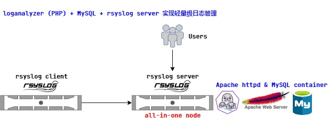
如图所示，rsyslog-server 服务端收集来自 rsyslog-client 客户端发送的指定系统日志数据，并且 Apache httpd server 与 MySQL 数据库均以容器的方式一同部署于服务端。
loganalyzer 与 MySQL 的容器化部署要点：
- 部署用
Shell脚本可参考 此链接。 - 部署用节点：
- serverb.lab.example.com (RH294v8.0 course)：2 vCPU，4GiB RAM
- firewalld 服务已禁用
- SELinux 为 enforcing 模式
- 此次使用
podman runtime容器运行时运行所有容器。 - 该部署环境中已预配置
Red Hat Quay 3.3.0，并且已将mysql-57-rhel7:latest上传至该容器镜像仓库中的rhscl organization中。 - 将容器镜像上传至 Quay 中，需提前创建相应的 organizaion，否则将上传失败报错！
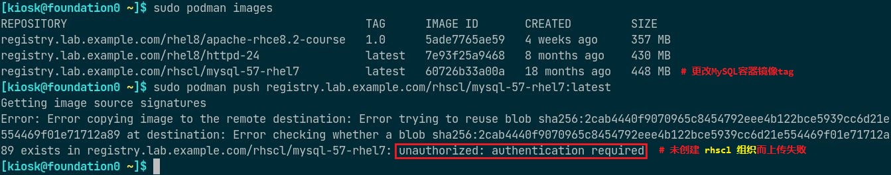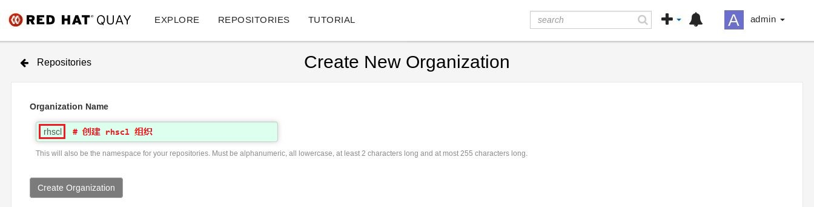 - 务必关闭并禁用节点
firewalld服务，该服务与iptables NAT规则冲突，在启用的情况下将无法实现容器的端口映射，iptables NAT 规则无法建立！ 由于 loganalyzer 容器与 MySQL 容器均位于同一节点上，且容器通过
CNI bridge(cni-podman0) 连接，因此 loganalyzer 连接 MySQL 时应使用节点的 IP 地址，但 MySQL 对指定用户的授权语句应使用CNI Gateway的 IP 地址，否则在前端 Web 上无法建立连接。1
grant all on Syslog.* to '${SYSLOG_USER}'@'${CNI_GATEWAY}' identified by '${SYSLOG_PASS}';
loganalyzer 容器镜像基于
Apache httpd server构建，可参考 此链接。- loganalyzer 项目基于 PHP，可作为 MySQL 数据库检索日志数据的 Web 前端。
- MySQL 容器使用持久化存储（卷映射）时，由于使用 Red Hat 官方镜像，启动容器时不使用 root 用户运行 mysql 守护进程，而使用 UID 27 (mysql) 运行，需设置宿主机映射目录的所有者与所属组，不更改将无法运行容器。
- 容器中报错日志如下所示：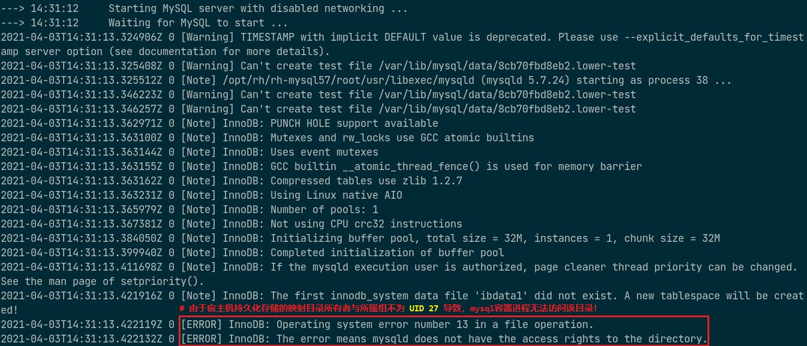
- loganalyzer 容器与 MySQL 容器部署成功且正常运行后，需访问 loganalyzer 容器所在节点以完成两者的对接，如下所示：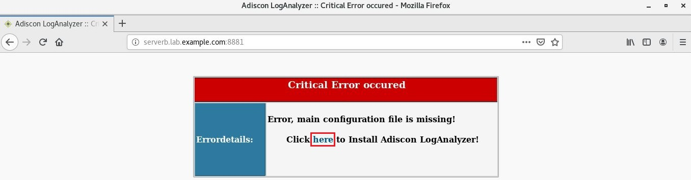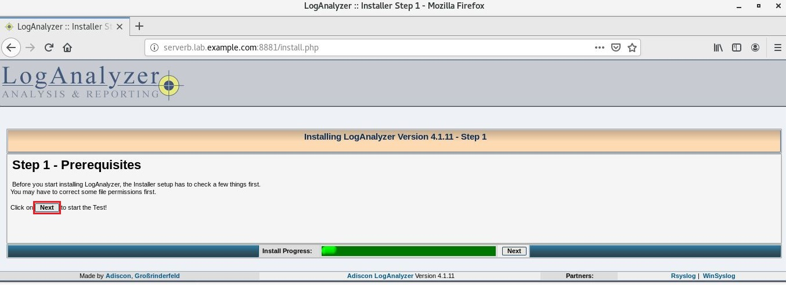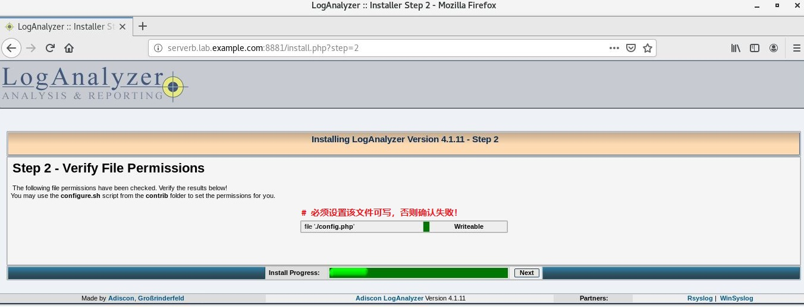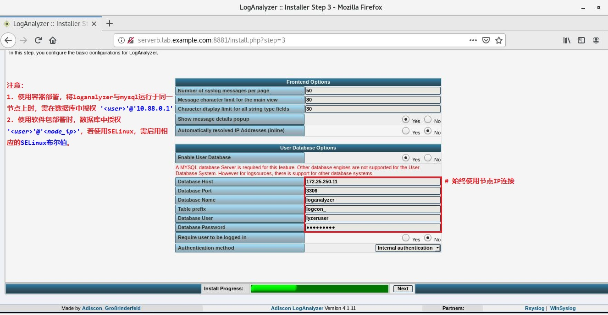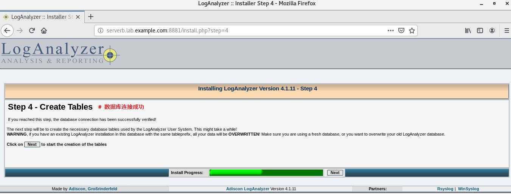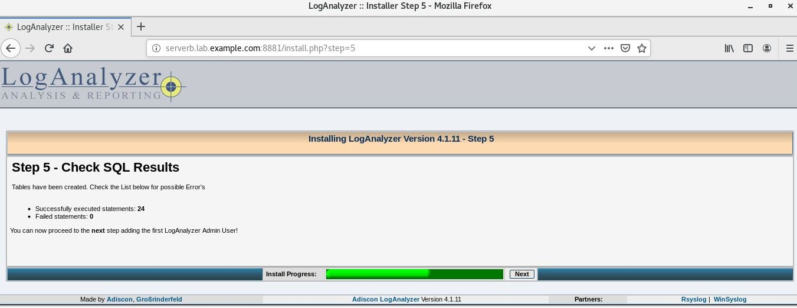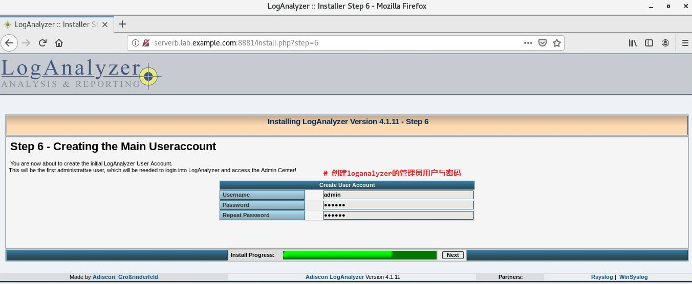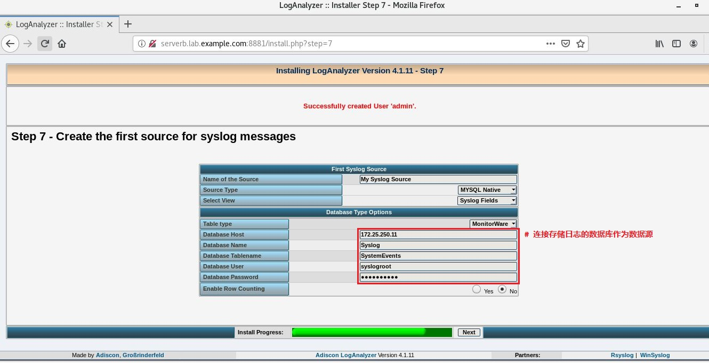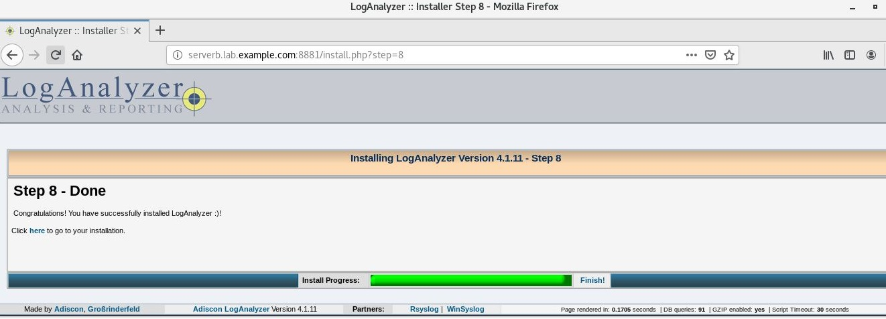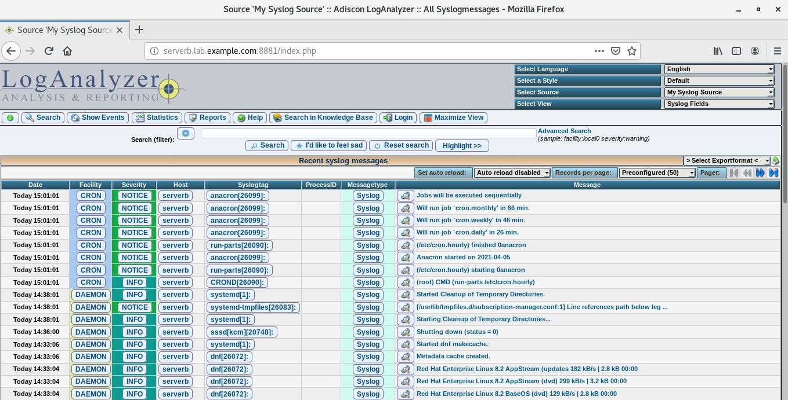
loganalyzer 的常规部署要点：
- loganalyzer 也可直接使用解压的压缩包（PHP 源码）实现安装，方法位于部署脚本的最后注释部分。
- SELinux 为
enforcing模式时，loganalyzer 无法与 MySQL 容器连接，需打开 PHP 与 MySQL的网络连接布尔值以支持。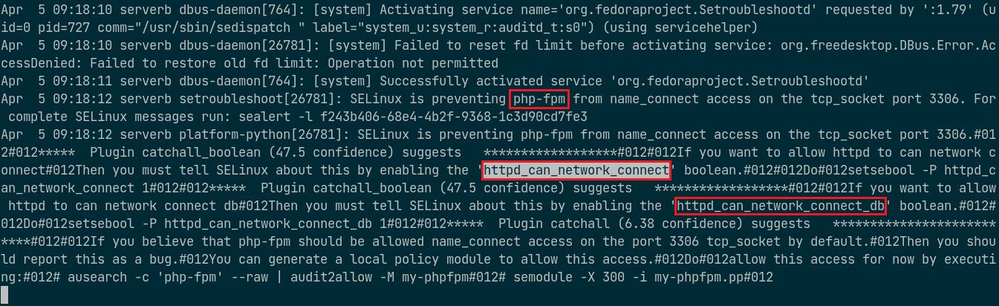